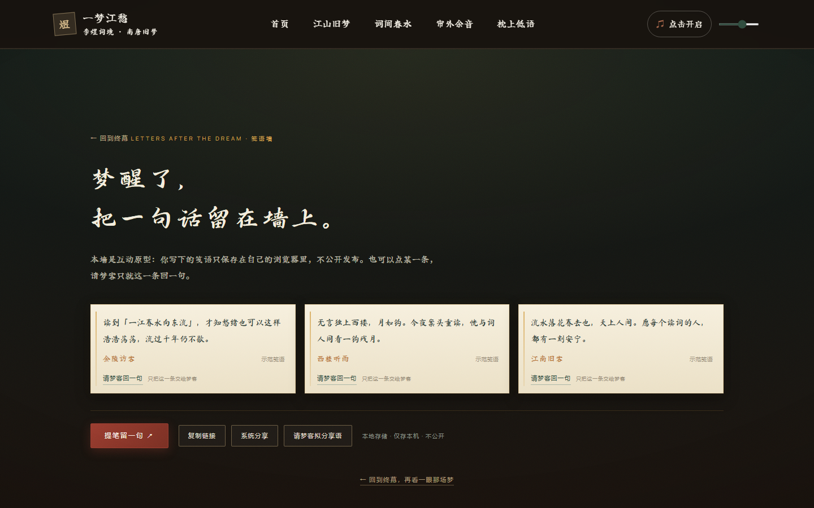

李煜词境 · 沉浸式中文站点与 AI 侍读
一个把词、史、地、人放回同一条时间线上的中文站点，以及一个「答必给出处」的 AI 侍读。
「一梦江愁」不是词人百科，也不是古典文学问答机器人，而是一次沉浸式阅读：读者从水墨首页进入，沿李煜四十一年的人生走完八个页面——读词、看生平、逛意象、听吟诵、走行迹、到终幕、留一句话。站内任何一处都可叫出「梦客」（李煜的第一人称化身）提问；他答完会注明出自哪本书、哪一卷，并可点开原文核对。
一句话概括：用一条可走的时间线承载可信的史料，用一个有人格、有边界的 AI 把史料翻译成第一人称的叙述。
「问君能有几多愁，恰似一江春水向东流」几乎人人会背，但多数人对李煜的全部印象只剩「亡国之君」四个字；网络叙述又大量互相转抄，「牵机药」究竟是正史定论还是宋人笔记，很少有人分辨。读者与一个真实的人之间，隔着一层名句的薄纱和一堆真假混杂的转述。
项目不做「词人百科」，而做处境的还原：把词、史、地、人放回 937—978 的同一条时间线，让读者不是「知道」李煜，而是「走过」他的四十一年。「梦客」这一叙事装置可以有情绪、有温度，但视角被严格限定在史料可证的范围内——沉浸感来自第一人称，可信度来自第一人称的自我克制。
大模型最擅长流畅，也最擅长流畅地编造。历史题材里一次无据回答的伤害胜过十次沉默，因此项目从第一天就确立原则：可信度本身就是体验的一部分。史实必须落到某本书、某一卷；落不到就说「史料未载」；各书记载不一，就把分歧摆出来而不是替读者裁决。
把古籍扫描上传不等于数字化。真正稀缺的是三种新阅读关系：可问（任何一处都能向当事人追问）、可走（一句词跳到那一年的地图与人事）、可核对（每条答案都能点开原典自行判断）。项目尝试证明：传统文化数字化不必在「严肃但难读」与「好玩但失真」之间二选一，可信与可亲可以同时成立。
| 项目形态 | 多页中文静态站点 + Node 服务端 + AI 侍读接口；无需构建工具，浏览器直接运行 |
| 技术栈 | HTML / CSS / 原生 JavaScript / Three.js；Node.js ≥ 22.18（原生 TypeScript 类型擦除）；OpenAI 兼容大模型接口 |
| 数据规模 | 词作库 24 首；史实事实库；四库语料 470 卷 / 5059 块 / 3949 条 2048 维向量 |
| 运行依赖 | 服务端零第三方包；前端零构建、零 CDN |
| 在线演示 | Railway 托管，Node 22.23.4，公网 HTTPS，免登录访问 |
| 代码仓库 | https://github.com/compensate-dev/----（GitHub 公开仓库），保留完整中文提交历史，含语料重建全过程 |
| 用户类型 | 特征与诉求 | 典型场景 |
|---|---|---|
| 文学爱好者 | 熟名句而不熟南唐史，想知道「词在什么处境下写成」 | 读《虞美人》时追问「这句好在哪里」，得到第一人称叙述 + 正史记载 |
| 学生与自学者 | 为课程、论文查资料，对出处敏感 | 问「牵机药是史实还是传说」，得到正史／笔记／一般看法三层辨析 |
| 普通浏览者 | 被视觉吸引，停留短，不愿注册安装 | 免登录进入，沿地图飞七站，三十秒内被水墨场景抓住 |
对照大赛推荐方向，本项目以两个方向为主体、三个方向为延展：
| 定位 | 大赛方向 | 本项目对应 |
|---|---|---|
| 主选 | RAG 知识问答系统 | 古典文学垂直领域，470 卷四库语料 + 向量检索增强生成，回答附可核对出处 |
| 主选 | AI Agent 智能助手 | 「梦客」具备自主规划、Function Calling 工具调用（7 个工具）、多轮对话（默认 4 轮）能力 |
| 延展 | 多模态 AI 创意平台 | 文本、语音、图像、视频、3D 交互地图五模态融合 |
| 延展 | AI 安全与内容治理 | 输入/输出双层闸门、提示注入拦截、内容过滤与六级降级兜底 |
| 延展 | AI 社交与社区应用 | 笺语墙：AI 回笺、意象互联、克制的社区互动 |
| 评分维度（权重） | 本项目核心证据（详见后文） |
|---|---|
| AI 技术深度 35% | OpenAI 兼容可换模型、7 工具 Agent 循环、四库分级 RAG、五模态、双层闸门（第四章） |
| 创新性 25% | 第一人称正史级问答、四库分级与点名式引文、问→答→抵达交互（第三章） |
| 前端工程质量 10% | 三层脚本解耦、136 项单元断言、零构建零 CDN、语料惰性常驻（第五章） |
| 实用性 10% | 三类真实用户、四个具体场景；免登录公网可用（本章、第二章） |
| 用户体验 10% | 统一水墨设计系统、响应式抽屉、思考过程可视化、朗读三通道兜底（第三、五章） |
| 社会价值与商业 10% | 古籍活化、普惠教育、责任 AI 范式；文博授权／校本课程／文创延展三路径（第七章） |
评审既可直接打开公网地址零配置体验，也可按本章步骤在本地完整运行。
| 访问地址 | https://web-production-e6033138.up.railway.app |
| 账号要求 | 免登录、免注册、免安装，无测试账号环节 |
| 浏览器 | Edge / Chrome / Safari 近年版本；桌面端与手机端均已适配 |
| 可用性保障 | 平台健康检查 + 失败自动重启；评审期单实例常驻 |
打开地址即进入水墨首页，点击「翻开词境」印章按钮入场。站内所有页面与 AI 问答均走同源接口，无需任何额外配置。
环境要求：Node.js ≥ 22.18（用到原生 TypeScript 类型擦除，低版本启动时会明确报错退出）；可访问 OpenAI 兼容的对话与向量接口。
# 1. 获取代码并进入目录（公开仓库，无需权限） git clone https://github.com/compensate-dev/----.git liyu cd liyu # 2. 准备环境变量（仓库提供模板，内含逐项中文注释） copy .env.example .env.local # 编辑 .env.local，填入 GUIDE_API_KEY 与 GUIDE_API_BASE # 3. 启动（服务端零第三方依赖，无需 npm install 业务包） npm start # 4. 浏览器访问 # http://localhost:53422
语料与向量文件随仓库提供，首次检索时解析一次后常驻内存；若缺失向量文件，系统自动降级为关键词检索，站点仍可完整浏览。
| 变量 | 必填 | 说明 |
|---|---|---|
GUIDE_API_KEY | 是 | 对话模型密钥，仅服务端使用，前端与静态资源中不含任何 Key |
GUIDE_API_BASE | 是 | OpenAI 兼容接口地址 |
GUIDE_MODEL | 否 | 缺省 glm-4-flash，线上为 deepseek-chat，改变量即换模型 |
EMBED_API_KEY / EMBED_API_BASE | 否 | 向量接口（模型固定 embedding-3，2048 维）；缺省时退化为关键词检索 |
AGENT_ROUNDS | 否 | Agent 循环轮数 2—5，缺省 4 |
TTS_PROVIDER | 否 | 设为 glm 时优先 GLM-TTS 朗读 |
PORT | 否 | 缺省 53422，云平台由平台注入 |
| 操作 | 方式与反馈 |
|---|---|
| 唤起 AI 侍读 | 点击每页右下「梦客」印章打开对话面板；输入上限 800 字，支持麦克风语音输入 |
| 查看回答出处 | 回答下方来源卡可点开原典原文与卷次；「梦客查过」步骤卡展示调用了哪些工具、命中几条、耗时多少 |
| 语言驱动地图 | 问「975 年他在哪」一类问题，梦客返回「前往」动作卡，点击后 3D 地图自动飞抵对应站点 |
| 听词与朗读 | 听词页背景音乐跨页续播；朗读走 GLM-TTS → 本机语音 → 浏览器语音三通道自动降级，按钮必有反馈 |
| 收藏与词牌 | 词作可收藏（本地存储，兼容旧版数据迁移），按词牌聚合跳转 |
| 笺语墙互动 | 提笔留言；可请梦客回笺（只回被点的那条，且必须引用站内已有词句）；分享文案同样只取站内成句 |
内容亮点解决「愿不愿意读」，技术亮点解决「能不能信」，工程亮点解决「跑不跑得稳」。
不是问答百科，而是当事人讲述。人格设定叙事边界（截止 978 年），文学性与史实约束同时成立，市面未见同类形态。
回答里的年份可跳时间轴、地名可飞地图、词句可回词作页，把「读到」变成「走到」，八个页面构成一条完整叙事动线。
面对「牵机药」这类问题不站队、不含糊，把正史、宋人笔记、一般看法分层摆出并标注性质，判断权交还读者。
六张概念卡只做陈列，不标价、不导购、无支付，把「文化转译」与「商品交易」明确切开，同时规避版权与交易合规风险。
| 亮点 | 做法 | 新在哪 / 如何验证 |
|---|---|---|
| 四库分级 RAG | 语料按信源分 A/B/C/D 并赋权 1.0 / 0.92 / 0.55 / 0.4；D 库不向量化，只做关键词与交叉核对 | 常见 RAG 只按相似度排序、不辨史料等级；本项目让信源等级进入排序公式，检索结果可直接观察 |
| 点名式引文核对 | 只对回答中明确点名的卷定位原文，最多 3 条；未点名则不给引文 | 解决「有引用但引错」的通病；每条引文点开即与答案对上 |
| 可信度三件套 | citations（原文）、compare/compareConflict（跨库出入）、dispute（三层辨析）结构化字段 | 把「可信」拆成可渲染的数据，而不是一句「据史料记载」 |
| 运行时 RAG | 本地无载时在线抓整卷 → 切块 → 向量化 → 落盘 → 并入索引 | 语料可增量生长，新块与既有块走同一套检索，非临时拼接原文 |
| 双层安全闸门 | 输入侧白/黑名单 + 注入检测；输出侧越界词打码 + 审计日志 | 把「允许的文学性」与「不允许的越界」分开处理 |
| 过程透明 | 每次工具调用记录轮次、参数、命中数、耗时，前端呈现「梦客查过」 | 推理路径可见，降低「一本正经胡说」的不可见风险 |
| 亮点 | 说明 |
|---|---|
| 零构建、零 CDN、零运行时依赖 | 前端全部为可直接阅读的源码，Three.js 本地内置；服务端约 200 行、无第三方包，部署只需 Node 22 |
| 一份业务代码多运行时 | AI 逻辑写在标准 Request/Response 的 TypeScript 中，十余行 Deno 兼容壳使其同跑于本地 Node 与云端，杜绝环境不一致 |
| 朗读三通道降级 | GLM-TTS → 本机语音 → 浏览器 speechSynthesis，任何网络与设备条件下按钮都有反馈 |
| 响应式与无障碍 | 移动端底部「案头」抽屉替代侧栏；关键按钮含 aria-label；动画可关闭、不锁滚动 |
| 成本可控 | 单次问答一次对话调用、检索用预计算向量；语料内存常驻约 150—200 MB，单实例足以承载评审期流量 |
五种模态共享同一份数据与人格设定，围绕文本证据组织，而非简单堆砌：
| 模态 | 载体 | 融合方式 |
|---|---|---|
| 文本 | 词作、史实、AI 问答 | 叙事主干，其他模态围绕文本证据展开 |
| 语音 | TTS 三通道 + 语音识别输入 | 朗读内容与 AI 回答同源同人格，失败自动降级 |
| 图像 | 水墨场景、词画、印章视觉 | 词画由词意生成并缓存，统一 AIGC 标识，与词作互引 |
| 视频 | 氛围背景视频 | 本地托管、按页加载、支持 Range 拖动，不拖慢首屏 |
| 3D 交互 | Three.js 水墨行迹地图 | 接受 AI 工具 navigate_to 指令飞达站点，语言驱动空间跳转 |
选型求「可换」、集成求「一份代码」、优化求「少花钱、不瞎编、能核对」。
项目不绑定单一厂商，所有调用走 OpenAI 兼容的 /chat/completions 与 Function Calling 协议。线上使用 deepseek-chat（中文文学表达强、工具调用稳定），缺省回退 glm-4-flash（有免费额度），改一个环境变量即切换，业务代码零改动。向量模型为同源 embedding-3（2048 维），文言短句到现代问句的跨语体匹配明显优于通用小模型。
POST /api/guide { action, message, page, sessionId, history }
→ guardText 输入闸门 → Agent(轮数≤4) → 7 个工具 → 四库 RAG → 模型
← { answer, sources, cards, citations, dispute, compare, steps, model }
密钥只存服务端环境变量，前端永远只请求同源 /api/guide，既防泄漏也避免浏览器直连模型的跨域与限流。规模论证上，5059 块 × 2048 维 float32 仅约 32 MB，一次线性余弦计算在 Node 中为毫秒级，因此不引入向量数据库与编排框架——手写 40 行 Agent 循环让超时、重试、轮数上限全部显式可见。
系统提示词分三层依次收紧：角色层（978 年之后回望的梦客，第一人称、克制不喧哗）、事实层（只说本站词作与四库可查之事，不编造，无据说「史料未载」）、形态层（禁止教科书腔与条目式说教，引用要落到卷，单次回答 ≤ 420 tokens）。事实约束独立成段、写成规则，比散落在文学化角色描述里更易被模型遵守。
| 硬约束 | 具体要求 |
|---|---|
| 第一人称 | 以「我」自称，视角限定 978 年之前，不使用「李煜认为」式第三人称转述 |
| 禁止编造 | 不得虚构词句、年号、官职、事件；不确定就说「史料未载」 |
| 引用落卷 | 提及史实给出书名与卷次，格式统一，便于后续核对 |
| 语体与篇幅 | 不用「首先/其次/综上」；以叙述代讲解；宁可短而实 |
| 场景差异 | 七个动作共享基底提示词：compose 追加格律约束、reply 限定只回被点留言且须引站内词句、share 限定只取成句 |
| 库 | 来源 | 块数 | 是否向量化 | 权重与用途 |
|---|---|---|---|---|
| A | 旧五代史、新五代史、资治通鉴、宋史、五代会要等 | 3371 | 是 | 事实主干，权重 1.0 |
| B | 陆游/马令南唐书、吴越备史、江表志等 | 437 | 是 | 细节补充，权重 0.92 |
| C | 南唐近事、江南野史、钓矶立谈等 | 141 | 是 | 异闻参考，权重 0.55 |
| D | 十国春秋 | 1110 | 否 | 仅关键词与交叉核对，权重 0.4 |
D 库不向量化是信源定性而非工程量取舍：其成书晚、编纂成分重，参与语义召回容易在「最像」排序里压过正史原卷；限制为关键词命中，既保留检索价值又不让它主导叙述。
按段落优先、句末兜底两级切分，单块上限 620 字、碎片下限 40 字，保证语义完整。离线管线「抓全文 → 切块 → 批量 embedding」具备分批（64 块/批）、断点续跑、原子写（临时文件再 rename）三个特性，中断不产生半个 JSON。
通过 Function Calling 把五类数据源封装为 7 个结构化工具，模型按 JSON Schema 自主决策，AI 与外部数据的集成全部走显式工具通道：
| 工具 | 作用 | 关键参数 / 数据源 |
|---|---|---|
search_poems | 按词牌、意象、词句检索词作 | keyword ／ 词作库 |
get_poem_detail | 取一首词的完整资料 | slug ／ 词作库 |
get_timeline_event | 取生平时间轴某段 | year/key ／ 事实库 |
get_location | 取地图某站人事 | slug ／ 事实库 |
navigate_to | 生成「前往」动作卡驱动前端跳转/地图飞行 | page、anchor、spot |
search_history | 四库分级检索 | query、juan ／ 5059 块本地语料 |
fetch_history_online | 在线补抓整卷，切块向量化后落盘并入索引（运行时 RAG） | book、juan ／ 白名单在线语料 |
| 机制 | 做法与价值 |
|---|---|
| 引文核对 citations | 回答定稿后抽取其中点名的书名卷次，反查语料定位原文，最多 3 条；只认点名的卷，未点名返回空数组而非拿召回块凑数 |
| 四库对照 compare | 候选池前 8 条交 detectTierConflict，跨库记载有实质出入即置 compareConflict，判据在代码里而非模型自由裁量 |
| 争议辨析 dispute | 命中死因、真假、传说等争议特征时，按正史／笔记／一般看法三层组织并显式标注性质 |
| 人物卡 | 17 位人物档案在被提及时自动浮出，最多 2 张，每张附 2 条可点追问，降低古文人名门槛 |
| 过程透明 steps | 「梦客查过」展示查了什么、命中几条、耗时多少，可信度可被评审直接验证 |
node --test 覆盖 136 项断言；线上公网实测问答、引文、四库对照全部连通（详见 §5.6）。四层架构：静态前端、单进程服务端、可复用的 AI 业务层、离线构建的数据层；本章末附 9 幅项目实景截图。
三条分层原则：业务只有一份（Node 仅补齐 Deno.env.get 与 Deno.serve 两个最小实现，本地云端跑同一份代码）；前端零构建（脚本按基础库 → 页面脚本 → AI 交互分层加载）；数据与代码分离（语料重建不影响业务代码）。
| 技术点 | 实现 |
|---|---|
| 原生 JavaScript 三层解耦 | script.js（页面交互/收藏/朗读，213 KB）、ai-guide.js（AI 面板与结果渲染，62 KB）、map-textures.js（地图纹理数据，7.6 MB，本地化免外链） |
| Three.js 水墨 3D 地图 | 程序化水墨地形 + 七站冷热点；接收 navigate_to 的 spot 参数执行飞行动画，形成「问→答→抵达」闭环 |
| 数据驱动渲染 | 词作、时间轴、人物卡全部由 JSON 渲染；收藏走本地存储并兼容旧版数据迁移 |
| 面板数据源可配置 | AI 面板经 window.LIYU_AI_ENDPOINT 解耦后端地址，缺省同源 /api/guide，私有部署不改代码 |
| 响应式与性能 | 移动端案头抽屉；零 CDN 无外部阻塞；音视频 Range 分段流式；静态资源按扩展名缓存 |
server/index.mjs 约 200 行承担三件事：
/. 隐藏文件与 server/scripts/supabase/tests 等私有目录，且拼接后的绝对路径必须仍位于站点根内（防目录穿越），密钥与语料不经 HTTP 暴露；依托 Node ≥ 22.18 原生 TypeScript 类型擦除直接 import 业务层 .ts 文件，无需 tsc、无需打包；版本不足时启动阶段即明确提示退出。
| 数据 | 体积 | 加载策略 |
|---|---|---|
| liyu-data.json（词作库） | 30 KB | 按需读取 |
| facts.json（事实库） | 20 KB | 按需读取 |
| history/chunks.json | 16.4 MB | 首次检索解析一次后常驻内存 |
| history/vectors.json | 97 MB | 同步加载；缺失自动降级关键词检索 |
| history/sources.json | 15.1 MB | 取原文卷次时按需使用 |
加载函数采用「未加载 / 加载中 / 失败」三态缓存：失败一次不反复重试，解析异常只记日志不抛出，站点其余功能不受影响。以约 130 MB 的一次解析换取每次请求零磁盘 IO，是单实例小流量场景下更划算的取舍。
以下 9 幅截图均取自线上同版本站点的真实运行画面（1440×900），未作后期合成；截图时仅临时关闭教学弹窗与 AI 招呼气泡，页面本体与线上一致。

| 测试层 | 方式 | 覆盖与结果 |
|---|---|---|
| 单元测试 | node --test，136 项断言 | 规范化、白/黑名单、注入拦截、检索权重、引文抽取、争议判定、脱敏全通过 |
| 冒烟测试 | tests/smoke.mjs 起服务实测 | 首页与 /api/guide 端到端连通 |
| 线上验收 | Railway 公网 HTTPS 实测 | 静态资源 200；search 命中 6 首词；问牵机药返回 citations 1、compare 2，分层生效；音频拖动返回 206；私有路径拦截返回 404 |
npm start # 本地：Node 单进程监听 53422 railway up --service web # 云端：快照上传，平台装 Node 22（无业务依赖） railway domain update <id> --port 53422 # 域名绑定容器端口，平台签发 HTTPS
部署踩坑已固化为配置：.railwayignore 规则锚定根目录避免误排除 supabase/functions；显式 PORT 绑定消除 502；健康检查路径 / + 失败自动重启保障评审期可用。
按提交系统要求如实填写，不虚报、不套用与本项目无关的荣誉。
虽无获奖与发表记录，以下材料可证明项目的真实性、原创性与公开可访问性，供评审核验：
| 材料 | 核验方式与说明 |
|---|---|
| Git 完整提交历史 | 公开仓库 https://github.com/compensate-dev/---- 的 main 分支保留全量中文提交记录，按功能分批提交，涵盖语料重建、AI 业务、页面开发、部署调试全过程，可还原真实开发节奏 |
| 公网在线演示 | Railway 地址长期可访问（免登录），评审可随时复核本文档描述的每项功能与数据 |
| 本文档实景截图 | §5.5 九幅截图取自同版本线上站点，可与在线演示逐一对照 |
| 单元测试与验收记录 | 136 项断言测试代码随仓库提交；线上验收数据见 §5.6，可现场复跑 |
说明：公网可访问的演示站点属于作品部署，不等同于学术意义上的「公开发表」，本文档严格区分二者表述。
先说明项目缘起与原创性，再汇报开发过程中的自我迭代、现存不足与后续计划。
团队分工如实说明：队长胡建铭独立完成全部架构设计与编码实现、语料处理、测试部署及文档撰写；雷吴玲提供前端修改建议并提供 DeepSeek API 资源；文骏豪参与资料整理与事务性支持。开发过程使用 AI 编程助手辅助生成样板代码与文档初稿，所有 AI 生成内容均经人工逐条核对，史实一律以原典校验。
以下为本项目在从零开发过程中，经实测验证后做出的重要优化决策：
| 优化项 | 优化前的问题 | 优化后 |
|---|---|---|
| 引文核对机制 | 早期把检索召回块直接当引用，答案与引文经常对不上 | 改为「点名式核对」：只反查回答中点名的卷，未点名不给引文；引文数量下降但条条可核对 |
| D 库信源定性 | 十国春秋若参与语义召回，常以「最像」压过正史原卷 | D 库不向量化、权重降至 0.4，仅参与关键词命中与交叉核对 |
| 朗读可用性 | 单一 TTS 通道在网络受限或未开通资源包时静默失败 | 建 GLM-TTS → 本机语音 → 浏览器语音三通道自动降级，按钮必有反馈 |
| 运行时架构 | 本地 Node 与云端 Deno 两套业务代码行为难对齐 | 业务代码只写一份（标准 Request/Response），十余行兼容壳抹平运行时差异 |
| 数据管线可靠性 | 向量化耗时数小时，中断后需全部重跑 | 分批 + 断点续跑 + 原子写，中断恢复只跑未完成块 |
| 依赖与部署体积 | 误装无关开发依赖，部署链路变重 | 移除 devDependencies，服务端保持零第三方包，快照一次上传即可运行 |
| 检索健壮性 | 向量文件缺失或 embedding 故障时整个问答不可用 | 静默降级关键词通道，引文仍可返回，接口不报错 |
| 方向 | 具体计划 |
|---|---|
| 评测体系 | 建设 100—200 条问题标注集，量化引文准确率、四库对照召回率与越界率，作为每次改动的回归基线 |
| 检索增强 | 为 D 库补向量但保持低权重；引入 BM25 与向量融合的混合排序，减少对单一阈值 0.2 的依赖 |
| 交互体验 | 上线流式输出与逐句引文高亮；把「梦客查过」升级为可展开的完整检索轨迹 |
| 多模态 | 为词作配可交互水墨插画，完善「从词到物」的转译链路 |
| 工程治理 | 问答配额与限流、缓存命中统计、审计看板；语料挂只读卷支持水平扩容 |
| 社会价值落地 | 面向文博/文旅机构的定制授权、面向中学高校的校本课程版、文创概念对接正版供应链三条路径 |
如实标注每一类素材的来源与处理方式，是作品可被评审、可被复用的前提。
| 类型 | 来源 | 本站处理方式 | 权利归属 |
|---|---|---|---|
| 图片 | 游戏《燕云十六声》《忘川风华录》、电视剧《庆余年》、戏曲《天上人间李后主》的公开画面 | 按页面叙事选取、裁剪、排版，不独立传播、不提供原图下载 | 原权利人 |
| 图片 | Unsplash、Pexels、Pixabay 等免费图库 | 按各平台原始授权协议使用 | 原作者／平台协议 |
| 图片 | AI 图像生成工具创作 | 统一作 AIGC 标识，仅用于意境烘托，不作史实证据 | 项目组 |
| 视频 | 全部取自游戏《燕云十六声》实机运行画面 | 自行剪辑、调色并配合页面叙事重新编排，不含游戏完整流程 | 原权利人 |
| 文本 | 词作与史实引自公开古籍语料（四库系列等，详见 §4.3） | 切块、分级、向量化后用于检索与引文核对 | 公有领域 |
开发过程使用 AI 编程助手辅助生成样板代码与文档初稿；系统架构、提示词与人格设定、四库分级规则、全部业务代码的审查修正、测试与部署均由作者人工完成，AI 生成内容逐条经人工核对，史实一律以原典校验。完整声明文本见代码仓库 README 对应章节。